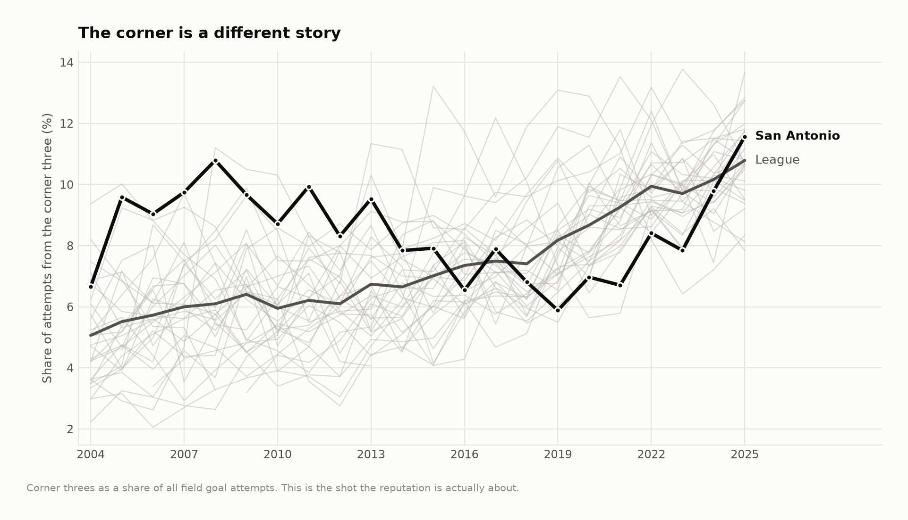
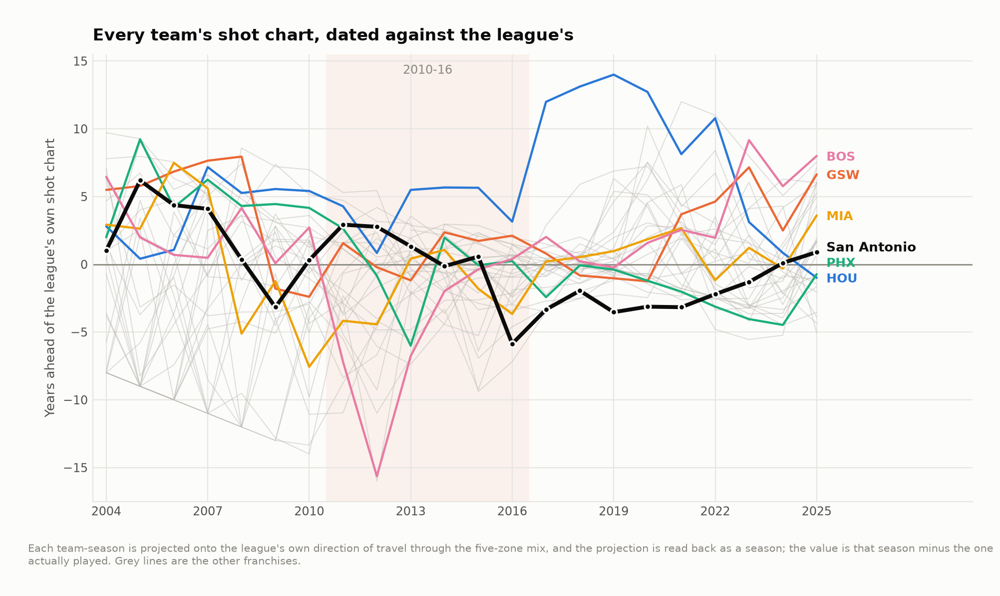

How the Spurs' shot mix changed
Did San Antonio adopt the league's eventual shot-location pattern earlier than other teams? This study compares five-zone attempt profiles from 2003–04 through 2024–25. Its “years ahead” measure is a retrospective projection onto the league trajectory. It does not measure offensive quality or establish who invented a strategy.
What the comparison shows
| Team | Seasons | Years ahead | Corner rank | Three rank |
|---|---|---|---|---|
| SAS | 22 | -0.128 | 11.727 | 16.682 |
Source: team_ranking.csv.
San Antonio's average hides large differences between eras. Its corner-three emphasis was more distinctive than its overall three-point volume. The principal-component projection also rewards movement away from midrange shots; a high score need not come from taking more threes.


The league trajectory is fitted using the whole historical sample. Calling a 2004 team “ahead” uses knowledge of later league behavior. That is appropriate for a historical comparison but would leak future information if used as a contemporaneous prediction.
Method and sensitivity
Team-season shot shares are projected onto the leading principal component of the league's zone shares, then mapped onto the league's score-to-year path. The off-axis distance describes how unusual a profile is. A nearest-neighbor comparison shows where matching to observed seasons clips extreme profiles.
Five zones discard distance and shot-creation detail. Franchise labels cover unequal periods; averaging them does not hold personnel or opponents constant. The output cannot establish that shifting an attempt to a different zone would improve scoring.
Front office implications
Use the historical profiles to distinguish a team's shot-location identity from its reputation. For a current player or roster decision, add who creates the attempts, possession outcomes without a shot, and film on the availability of alternative attempts. The current files support the descriptive comparison only.
Reproduce
The historical analysis used Python 3.12 with the pinned dependencies below. From this repository:
python3.12 -m venv .venv
source .venv/bin/activate
python -m pip install -r requirements.txt
make fetch-data PY=python
make all PY=python
make report site PY=python
make all verifies source hashes before running the analyses in order. A missing or changed input stops the build. Data downloads need network access; article rendering uses the included result tables. See the source manifest, method notes and current validation record for the distinction between a source rebuild and checks of delivered outputs.
Season keys in CSV files use the ending year: 2025 means 2024–25. Display tables use full season labels. The MIT license covers code; third-party data retain their providers' rights and terms.